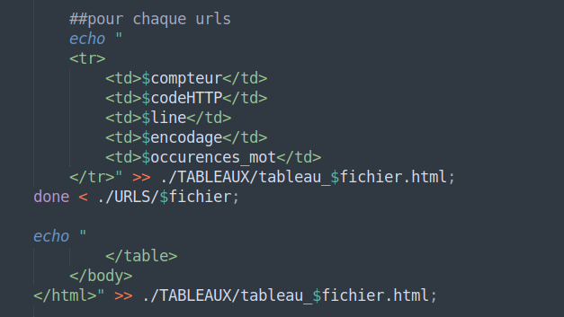

Sixième étape - Décompte des occurrences du mot et vérification des codes HTTP
À cette date nous avons continué le travail sur les tableaux HTML. Cette fois-ci nous avons procédé à l’écriture de certaines lignes de code qui nous ont permis d’ajouter le nombre d’occurrences de nos mots-clés dans chaque url. Les lignes de code sont les suivantes :
Tout d’abord nous avons déclaré une variable “occurrences_mot” avec une valeur nulle. Ensuite, avant d’activer les commandes qui permettent de compter les occurrences, nous avons vérifié que la variable “encodage” n’était pas nulle et que le code HTTP était bien 200 ou 302 (codes qui nous indiquent la réussite de notre requête). Concernant la commande “unset” pour la variable “occurrences_mot”, nous n’avons pas réussi à faire fonctioner le script sans (car sans “unset”, aucune valeur n'est réaffectée à la variable “occurrences_mot”).
En ce qui concerne le décompte des occurrences de nos mots-clés, une fois vérifié que l’encodage était correct et que la réponse HTTP était la bonne, nous avons utilisé le navigateur web en mode texte “lynx”.
La commande “lynx” est utilisée avec les options “-dump” et “-nolist” sur la base des aspirations "curl" effectuées lors des étapes précédentes. L’option “-dump” renvoie le rendu de “lynx” dans la sortie standard. “-nolist” désactive l’apparition de la liste des liens corrélés à la page web en renvoyant ainsi seulement le texte des articles. Le résultat de la commande “lynx” est finalement enregistré dans un fichier texte et sauvegardé dans un dossier DUMPS-TEXT. Tous les dumps-text serviront dans la ligne suivante où l'on attribue à la variable “occurrences_mot” le résultat d'une recherche textuelle effectuée avec “egrep”. La recherche “egrep” sert à matcher un certain pattern (nos mots-clés), elle compte également le nombre d'occurrences de ce pattern.
C’est donc avec les options “egrep” -o (pour output) et -c (pour count) qu’on obtient enfin la valeur correcte de la variable “occurrences_mot”, soit le nombre de fois où ce mot apparaît dans le texte. “occurrences_mot” est ensuite inclus dans les tableaux HTML.
